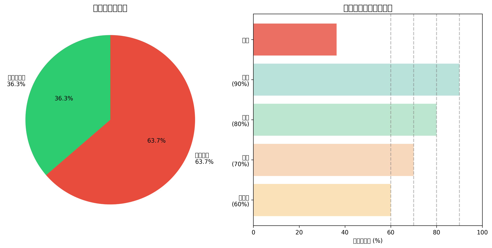
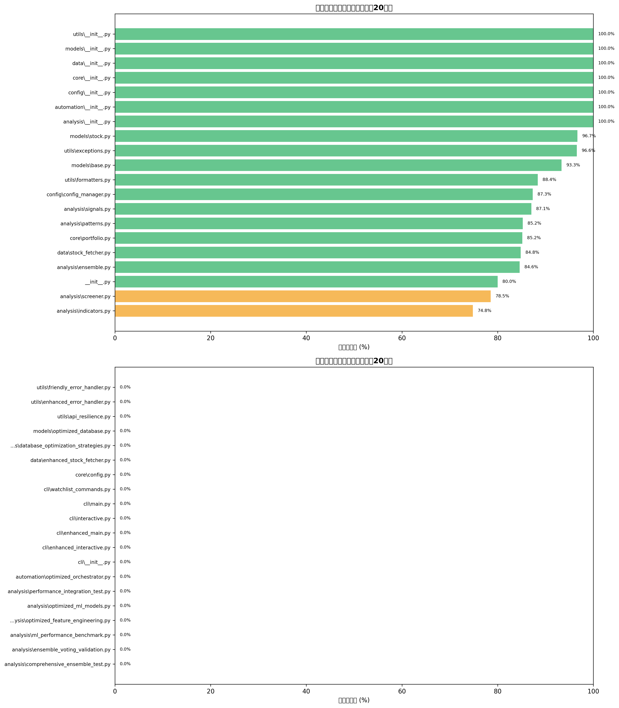
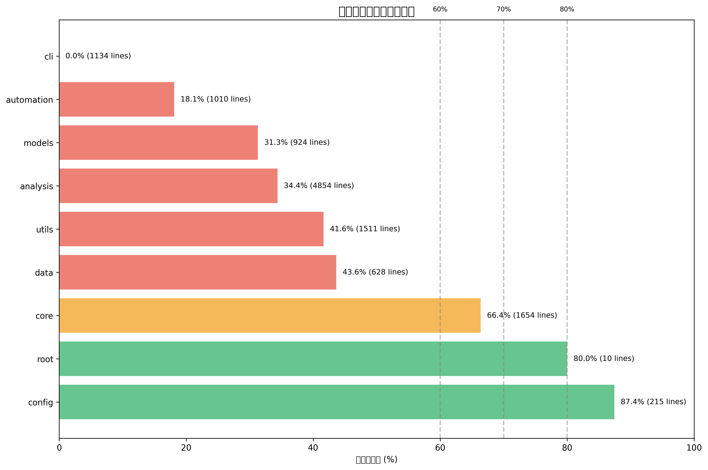

Day Trade テストカバレッジダッシュボード
最終更新: 2025年08月03日 05:21:48
36.3%
ライン カバレッジ
4,338
カバー済み行数
11,940
総行数
58
ファイル数
📋 推奨事項
🔴 カバレッジが60%未満です。テストの追加が急務です。
📁 ファイル数が多いため、モジュール別のテスト戦略を検討してください。
カバレッジサマリー

ファイル別カバレッジ

パッケージ別カバレッジ
